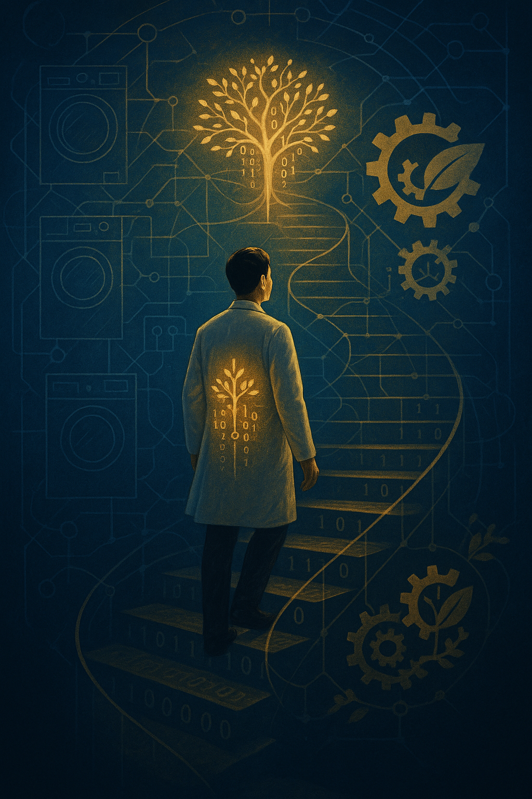

생각많은 소심남의 연구노트: 강화 학습과 온디바이스 AI를 통한 이론과 실제 엔지니어링의 융합을 탐구합니다.
키워드
인공지능, 강화 학습, 온디바이스 AI, 딥러닝, 엔지니어링, 머신러닝
Practitioner–Scholar · Applied RL & On-Device AI
실천적 지혜의 상승
한 명의 실천‑학자가 0과 1의 이진 스트림으로 짜인 나선 계단을 오릅니다. 이론이 물리적 제약과 만날 때 탄생하는 깊은 학습—프락시스(Praxis)—를 화두로, 강화학습과 온디바이스 AI를 가전과 로보틱스의 실세계 제어 문제에 연결합니다.
페르소나 일러스트에 담긴 네 가지 상징 펼쳐보기
나선 계단
배움과 성장은 직선이 아니라 실험·적용·이론이 맞물리는 순환과 누적의 과정입니다.
빛으로 피어난 데이터‑나무
데이터와 통찰이 결합해 지속 가능한 혁신으로 꽃피는 모습을 표현합니다.
회로‑청사진 배경
철학적 성찰이 가전과 임베디드라는 실세계 엔지니어링 문제 속에 뿌리내리고 있음을 뜻합니다.
맞물린 기어와 잎사귀
효율(기어)과 환경(잎사귀)의 조화를 통해 기술이 인간 삶에 봉사한다는 사명을 상징합니다.

Every hard‑won lesson becomes the next foothold upward.
핵심 연구 영역
연구자 소개 더보기 →On-Device AI & 배포 검증
제한된 임베디드 자원과 NPU(Edge TPU, Hailo-8, Jetson) 환경에서 양자화 아티팩트의 실제 제어 성능을 감사하고 최적화합니다.
데이터 기반 & 오프라인 강화학습
탐색이 제한된 실물 시스템에서 로그 데이터와 월드 모델·보상 학습을 결합해 안전하고 지속 개선 가능한 제어 정책을 설계합니다.
가전 제어 & 피지컬 AI
세탁기·건조기·냉장고·HVAC 양산 제어부터 SO-101 로봇 팔과 XR 분석 도구까지 물리 세계와 맞닿은 AI 파이프라인을 구축합니다.
주요 연구 & 프로젝트
전체 프로젝트 (8) →
NeurIPS 2026 Workshop (ODI)
Paired Task Audits for On-Device Neural Control
동일한 정책과 INT8 라벨이라도 calibration row 선택만으로 Hailo-8 제어 성공률이 96.6%와 21.4%로 갈리는 현상을 실물 가속기 루프에서 규명합니다.
96.6% vs 21.4% · 1,024 Paired Seeds
Meta VR Competition 2026
GhostLab: 손으로 살펴보는 로봇의 동작
SO-101 로봇 팔의 정책 실행 궤적을 Meta Quest 가상 작업대로 옮겨, 핸드 트래킹과 0.25배속 관절 재생으로 오프라인 정밀 검토를 수행합니다.
Meta Quest XR · ACT Policy Rollout
IEEE CAI 2024 · 세계 최초 양산
Data-Driven RL for Washing Machines
실생활 운전 데이터를 활용한 오프라인 강화학습으로 다양한 세탁 부하의 탈수 진동을 억제하고 양산 가전에 탑재한 연구입니다.
Offline RL · Mass-Produced Control